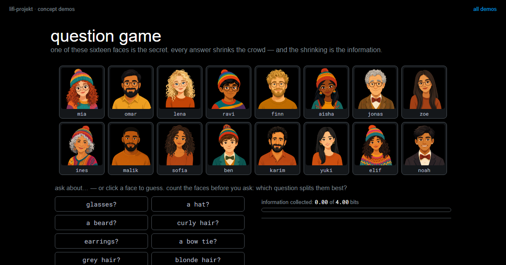

Symbols and Information
Summary
A symbol is an agreed, distinguishable state. Distinguishable is a question for physics and your sensor; agreed is a question for the two of you, and no measurement can answer it. The set of all agreed symbols is your alphabet, and how much a single symbol carries can be counted: with \(N\) equally likely possibilities it is \(\log_2(N)\) bits. A bigger alphabet therefore carries more per symbol and finishes the same file sooner, which is exactly why the physics has to be asked how big it may be.
In this chapter, we address the following questions:
- What is a symbol, and who decides what it means?
- How much information does a single symbol carry?
- What is a bit?
- Why does a transmission get faster when the alphabet grows?
- Why is a question that halves the field better than one that might solve everything?
You need this concept for Challenge 1, where you agree on your own alphabet and have to defend its size.
Explanation
North Atlantic, 1942. Radio silence, because radio traffic draws the enemy. Two ships talk to each other anyway: a lamp, a shutter in front of it, short short short long. The light itself knows nothing. It means something only because both sides carry the same table in their heads.
A symbol is an agreed, distinguishable state, and both words carry weight. Distinguishable was the subject of Analog and Digital: can the receiver tell this state apart from all the others? Agreed is a different kind of question entirely, and here is what happens when it goes unanswered:
{kind=link}
No transmission error, no interference, no bad measurement, and the message is worthless all the same. In code, that agreement is a dictionary:
ALPHABET = {
"red": "00",
"green": "01",
"blue": "10",
"yellow": "11",
}This table is never transmitted. It has to sit on both sides beforehand, which makes it not data but a promise.
Information is uncertainty removed
What a message is worth does not depend on its length but on how much uncertainty it removes. One card is drawn from 32, and you may only ask yes/no questions. Ask well and you are done in five:
{kind=link}
That number of halvings is the measure. Its unit is the bit, and with \(N\) equally likely possibilities the uncertainty is \(H = \log_2(N)\) bits. The 32 cards are not the uncertainty; they are the space of possibilities. The uncertainty is the 5.
Information is then a difference: \(I = H_1 - H_2\), uncertainty before minus uncertainty after. A halving question lowers \(H\) by exactly 1, so its answer is worth one bit.
Not every answer is worth a bit
A lopsided question buys less. Ask “is it the ace of spades?” and you almost always get a no, and that no removes almost nothing.
{kind=link}
Written in general, the expected value of a question adds up, over all its possible answers, how likely each answer is times what it would be worth:
\[E = \sum_i p_i \cdot \log_2\!\left(\frac{1}{p_i}\right)\]
For a yes/no question that is two terms. Put the numbers in and you get the two rows above: \(0.5 \cdot 1 + 0.5 \cdot 1 = 1\) bit for the halving question, and \(0.03 \cdot 5 + 0.97 \cdot 0.05 = 0.2\) bits for the lopsided one. A whole bit goes only to whoever really splits the field in half.
That is why halving wins on average: it takes the largest guaranteed gain out of every answer. The lopsided question only becomes sensible right at the end, when two possibilities are left. And it is worth noticing what the second row implies: a question whose outcome is nearly certain carries almost no information, however long its answer. Compression later rests on exactly that observation.
You can play this in The Question Game: one of sixteen faces is the secret, you ask about features like glasses, beard or hair colour, and after every answer the demo works out what it was worth, expected value included. Count the faces before you ask. Whoever splits near the half is done in four questions, since \(\log_2(16) = 4\); whoever guesses early asks the most lopsided question there is and can watch the bit yield say so.
question gamefind the secret face among sixteen: every answer shrinks the crowd, the shrinking is measured in bits, and the halving strategy shows why four questions are enough.LiFi Project · concept demos
What that means for your alphabet
The same tool, now applied to your own link:
{kind=link}
So why not use 256 colours? Because physics has a say: more symbols means smaller distances between the colours, and past some point the noise eats the gain again. That is the bridge to Signal und Rauschen, and it makes the size of your alphabet a measurement rather than a matter of taste.
At the other end the opposite holds. Two symbols are enough for any message at all, you just need more of them:
{kind=link}
What a large alphabet does per symbol, two symbols do in a group. That is why every computer gets by with nought and one, and why a small alphabet is not a dead end but merely slower.
When symbols are not equally likely
Everything above treated all symbols as equally likely. In real text they are not, and Morse code exploits that:
{kind=link}
The unequal treatment pays because it shortens the average message: what occurs often should cost little. A rare symbol carries more information than a common one, so it may also take up more room. Every compression scheme rests on that.
Slides
The slides for this concept, right here. Page through them with the buttons in the top right corner, or click into the slides and use the arrow keys. The other buttons give you full screen, the slides in a new tab, and the deck as a PDF.
Practice questions
Try questions in the exam format here, with the answer and its reasoning shown right away.
Further reading
- Claude Shannon: A Mathematical Theory of Communication. Bell System Technical Journal, 1948, freely available online. The paper that founded all of this. The first six pages need no mathematics and contain the diagram of sender, channel, noise and receiver that your own link is built from.
- James Gleick: The Information. A History, a Theory, a Flood. Pantheon, 2011. The long story around it: talking drums, the telegraph, Morse’s letter frequencies and how the idea of measurable information came about. Chapters 1 and 7 fit this page exactly.